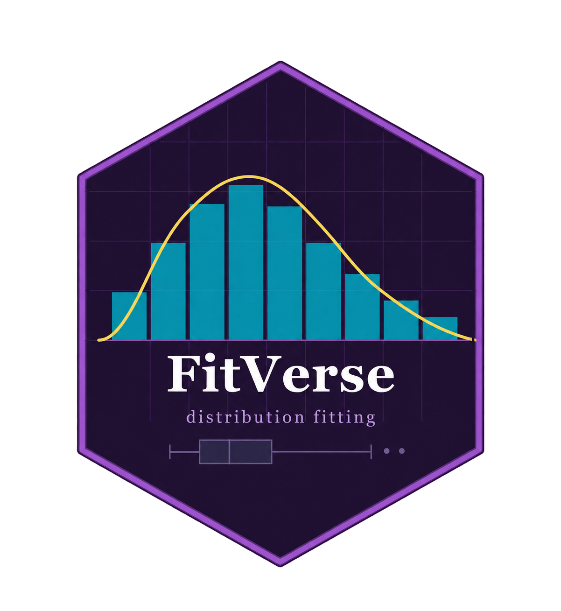

FitVerse
Parametric Distribution Fitting in R

FitVerse
Figuring out which distribution fits your data can take a while. Is it Gamma or Log-Normal? Maybe Weibull? Trying them one at a time is tedious, and eyeballing a histogram only gets you so far.
FitVerse does the searching for you. Give it your data and it fits all 52 distribution families, estimates parameters using MLE, MOM, or L-moments, ranks every fit, runs four goodness-of-fit tests, and returns a clean summary with plots. One line of code.
Distributions
FitVerse covers 52 distribution families across five groups.
Estimation Methods
MLE — Maximum Likelihood MOM — Method of Moments LMOM — L-Moments| Method | Best For | Notes |
|---|---|---|
| MLE | Most situations | Finds parameters that make observed data most probable |
| MOM | Quick estimates | Matches theoretical to sample moments; faster than MLE |
| LMOM | Hydrology; extreme values | Robust to outliers; ideal for flood peaks, rainfall maxima |
Run all three at once with method = "ALL". FitVerse picks the overall best fit across all methods and distributions.
Core Workflow
Quick Start
library(FitVerse)
# Built-in precip dataset: annual precipitation, 70 US cities
x <- as.numeric(precip)
# Fit all 52 distributions by MLE — ranked by AIC
fit <- fitverse(x, xlab = "Annual precipitation (inches)")fitverse() fits all 52 distributions, estimates parameters, ranks by AIC, runs 4 GoF tests, and produces a two-panel diagnostic plot. It all happens automatically.
Key Arguments
fitverse(x,
dists = "all", # subset: c("gamma","lognormal","gev") or "all"
method = "MLE", # "MLE", "MOM", "LMOM", or "ALL"
criterion = "AIC", # ranking criterion: "AIC" or "BIC"
xlab = "x", # axis label for plots and reports
plot = TRUE, # produce diagnostic plot?
interactive = FALSE, # plotly interactive? (needs plotly)
top_n = 3, # density curves to overlay
verbose = TRUE) # print ranked table to console?The Return Object
fit$best_fit # best-fit distribution: params, AIC/BIC, GoF stats
fit$ranking # ranked table of all 52 distributions
fit$all_fits # full list of every fitted model object
fit$data # original data vector
fit$data_summary # n, mean, sd, skewness, kurtosisS3 Methods
print(fit) — ranked table + best-fit parameterssummary(fit) — full goodness-of-fit tableplot(fit) — two-panel diagnostic plotcoef(fit) — best-fit parameter vectorlogLik(fit) AIC(fit) BIC(fit)nobs(fit) — sample size nresiduals(fit) — probability residualsfitted(fit) — fitted densities at data pointsconfint(fit) — Wald confidence intervals for parametersvcov(fit) — variance-covariance matrixsave_plot(fit, "fig.pdf", dpi = 600) — save plot to file
Diagnostic Plot
Every call produces a two-panel diagnostic plot by default.
Left panel (Density): histogram with the top top_n fitted density curves overlaid. The best-fit distribution is highlighted and its PDF formula is shown on the figure.
Right panel (Q-Q plot): theoretical quantiles of the best-fit distribution plotted against sample quantiles. Points close to the diagonal mean a good fit.
# Interactive version (needs plotly)
fit <- fitverse(x, interactive = TRUE)
# Save without displaying
save_plot(fit, file = "precipitation_fit.png", dpi = 600)
save_plot(fit, file = "precipitation_fit.pdf") # PDF or SVG by extensionFor hydrological and extreme-value work, use the LMRD as an exploratory tool before fitting. It plots sample L-skewness and L-kurtosis against theoretical curves for several distribution families.
lmrd(x)Goodness-of-Fit Tests
FitVerse runs four GoF tests automatically on every distribution:
| Test | Abbrev. | Sensitive To |
|---|---|---|
| Kolmogorov-Smirnov | KS | Overall CDF deviation |
| Anderson-Darling | AD | Tail behaviour (strong) |
| Cramer-von Mises | CvM | Overall CDF deviation |
| Chi-Squared | χ² | Binned frequency discrepancy |
fit$best_fit$gof # GoF stats for best fit
tbl <- compare_dists(x, method = "MLE") # ranked table only, no plot
head(tbl, 10)Probability Tools
dfitverse(30, fit) # density (PDF) at x = 30
pfitverse(40, fit) # P(X ≤ 40) — CDF
qfitverse(0.95, fit) # 95th percentile
rfitverse(100, fit) # simulate 100 values from fitted distributionWorks identically for all 52 distributions — no need to know the underlying d/p/q/r function names.
Bootstrap CIs & Return Levels
boot <- bootstrap_ci(fit, R = 500)
print(boot)
# shape: [4.12, 6.10] rate: [0.11, 0.17]A T-year return level is the value expected to be exceeded once every T years on average.
rl <- return_level(fit, T = c(10, 50, 100))
print(rl)
# T = 10: 49.2 [43.1, 56.2]
# T = 50: 60.9 [53.4, 69.8]
# T = 100: 65.4 [57.0, 75.9]boot_rl <- bootstrap_ci(fit, R = 500,
return_levels = c(10, 50, 100))
print(boot_rl)Batch Fitting
results <- fitverse_batch(my_data, method = "MLE")
results$summary # best distribution + parameters for each columnFits all numeric columns of a data frame at once. Useful when you want a quick distributional overview across many variables.
Report Generation
generate_report(fit,
title = "Precipitation Data: Distribution Fitting",
author = "Karuna Reddy",
output_file = "report.html") # or "report.pdf"
# Include bootstrap results
boot <- bootstrap_ci(fit, R = 500)
generate_report(fit, boot = boot, output_file = "report.html")Shiny App
FitVerseApp()Upload a CSV, choose distributions, switch between MLE/MOM/LMOM, explore plots interactively, and download a report — no code needed.
Who Is FitVerse For?
🌊 Hydrology
Fit GEV, Gumbel, GPD, Pearson III to flood peaks and rainfall maxima. LMOM + return levels built in.
📋 Actuarial Science
Fit Pareto, Burr, GB2, Log-Normal to insurance claims, with full heavy-tail coverage.
📊 Survey Sampling
Identify the distribution of a continuous survey variable before model-based estimation or simulation.
🎓 Teaching
The Shiny app and clean output let students explore distribution fitting visually without writing code.
🔬 Research
52 distributions · 3 methods · 4 GoF tests · Bootstrap CIs · report generation — all in one package.
Quick Reference
| Function | Purpose |
|---|---|
fitverse(x) |
Fit all 52 distributions, rank by AIC |
compare_dists(x) |
Ranked table only (no plot) |
lmrd(x) |
L-Moment Ratio Diagram |
bootstrap_ci(fit, R) |
Bootstrap CIs for parameters |
return_level(fit, T) |
Return level estimates |
dfitverse(x, fit) |
Density (PDF) |
pfitverse(q, fit) |
CDF |
qfitverse(p, fit) |
Quantile function |
rfitverse(n, fit) |
Simulate from fitted distribution |
fitverse_batch(df) |
Fit all numeric columns |
generate_report(fit) |
HTML / PDF analysis report |
FitVerseApp() |
Launch interactive Shiny app |
save_plot(fit, file) |
Save diagnostic plot |
Citation
citation("FitVerse")Reddy, K. G., & Khan, M. G. M. (2026). FitVerse: Parametric Distribution Fitting for R. R package version 1.0-2. https://cran.r-project.org/package=FitVerse
FitVerse is on CRAN: https://cran.r-project.org/package=FitVerse
We would love to hear how you are using it. Leave a comment or get in touch directly.